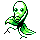
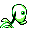

#069
Bellsprout
GrassPoison
A carnivorous Pokémon that traps and eats bugs. It uses its root feet to soak up needed moisture
Base stats Total 270
HP50
Attack75
Defense35
Speed40
Special70
Details
- Species
- Flower
- Height
- 2'04"
- Weight
- 9.0 lb
- Catch rate
- 255
- Base exp
- 84
- Growth
- Medium Slow
Level-up moves
LevelMoveType
StartVine WhipGrass
StartGrowthNormal
Lv 10WrapNormal
Lv 16PoisonpowderPoison
Lv 19Stun SporeGrass
Lv 20AcidPoison
Lv 22Sleep PowderGrass
Lv 24Razor LeafGrass
Lv 38SolarbeamGrass
Evolution
TM / HM
TM03 Swords DanceTM06 ToxicTM09 Take DownTM10 Double-EdgeTM21 Mega DrainTM22 SolarbeamTM31 MimicTM32 Double TeamTM33 ReflectTM34 BideTM40 Sludge BombTM44 RestTM50 SubstituteHM01 CutHM05 Flash